DEFINITION
什麼是 AURO NEXUS？
AURO NEXUS 是奧洛（Aurobase）推出的AI 治理平台，讓企業在自有環境裡導入生成式 AI，並保留可稽核的證據。
平台以 Forge 為治理底座：各模組的 AI 呼叫都經 Forge 做權限與政策檢查、送往經核准的模型（可限定地端），並寫入雜湊鏈稽核軌跡。其上是 AI 編排、客戶資料、知識、內容與行銷智能、合規治理、生產力、現代化與安全等能力，共 14 個模組，可依需求分階段導入。
適合誰
- 金融與受監理產業要在私有或離線環境導入 AI，並對主管機關交代得清楚。
- 資訊長與數位轉型負責人要一個平台收斂各部門的 AI 使用，而不是各自採購、各自串接。
- 資安、法遵與稽核要看得到每一次 AI 使用的權限、資料與核准紀錄。
ARCHITECTURE
一個治理底座，14 個模組
上層的每一個模組各自解決一類問題；下層的治理底座讓它們共用同一套權限、模型與稽核軌跡。
客戶資料
身分解析、單一客戶視圖與 B2B 帳號經營。
AURA CDP客戶數據平台整合顧客資料、建立單一顧客檔案，並驅動分群與旅程的顧客數據平台。NEXUS ABM企業客戶帳號經營B2B 目標客戶經營引擎：帳號解析、意圖評分、歸因與分群。WHERE TO START
依需求找模組
不需要一次導入全部。從眼前最急的那件事開始，之後的模組共用同一個治理底座。
| 您的需求 | 對應模組 |
|---|---|
| 統一管理企業內的 AI 使用，並留下稽核紀錄 | Forge 治理化 AI 閘道 |
| 讓 AI Agent 自動執行工作，但保留人工審核 | Auro AI 任務編排 |
| 整合客戶資料，建立單一客戶視圖 | AURA CDP 客戶數據平台 |
| 經營 B2B 目標客戶，評估購買意圖 | NEXUS ABM 企業客戶帳號經營 |
| 建立可追溯出處的企業知識庫與 RAG 問答 | Insight 企業知識萃取與治理 |
| 讓員工的知識收藏留在企業環境內 | Library 個人知識收藏空間 |
| 用 AI 產製金融宣傳內容或衛教文章，並經審核 | MIRA 受監理產業內容產製與審核 |
| 分析輿情的情緒與敘事走向 | Pulse 輿情訊號分析 |
| 提升品牌在 AI 搜尋中的能見度 | NEXUS GEO 生成式搜尋能見度 |
| 治理非結構化資料的分級、保存與處分 | SAGA 非結構化資料治理 |
| 用 AI 產出提案書、報價單與週報 | NEXUS AI-Office 商業文件產製 |
| 盤點大型主機程式，產出繁體中文規格書 | LISA 主機程式現代化 |
| 源碼檢測、弱點掃描與 SBOM | Scanner 源碼檢測與弱點掃描 |
| SSL 憑證管理與後量子密碼盤點 | Cardea SSL 憑證管理與機器身分治理 |
WHAT'S DIFFERENT
平台的三個承諾
先檢查，再推論
AI 請求在送往模型之前就完成權限與政策檢查；不符合的請求不會到達模型。
證據可以離線驗證
稽核軌跡以雜湊鏈保護，證據包附獨立驗證工具，稽核人員不需要連上平台就能查驗。
可以完全不出機房
平台與模型都可部署在企業自有環境，模型路由可限定只走地端模型。
FAQ
關於 AURO NEXUS 的常見問題
AURO NEXUS 是什麼？
AURO NEXUS 是奧洛（Aurobase）推出的 AI 治理平台，以 Forge 為治理底座，涵蓋 AI Agent、CDP 客戶數據平台、企業知識庫、AI 內容產製、源碼檢測與 SSL 憑證管理等 14 個模組，可部署於企業自有環境。
AI 治理平台和一般的企業 AI 平台差在哪？
一般企業 AI 平台著重讓員工用得到 AI；AI 治理平台另外負責在推論前檢查權限與政策，並留下可查驗的紀錄。AURO NEXUS 的所有模組都經 Forge 做這件事。
需要一次導入全部模組嗎？
不需要。可以從最急的需求開始，例如先導入 Forge 統一管理 AI 使用，或先導入 AURA CDP 整合客戶資料；之後新增的模組共用同一個治理底座。
AURO NEXUS 可以部署在自己的機房嗎？
可以。平台與模型都可部署在企業自有機房或私有雲，模型路由可限定只使用地端模型。
金融業導入 AI 要注意什麼？
金管會〈金融業運用 AI 指引〉以治理與問責、隱私與客戶權益、系統穩健與安全、透明與可解釋等原則為架構。AURO NEXUS 以推論前檢查、地端模型、雜湊鏈稽核軌跡與可離線驗證的證據包對應這些原則；是否符合由主管機關與貴機構法遵認定。
你的 AI 工作夥伴
不只聰明，更懂規矩
NEXUS OS 是一個整合了 200+ 工具的 AI 自動化平台。從法律諮詢、財務分析到文件生成，一個對話框搞定所有工作流程 — 而且每一步都有安全把關。
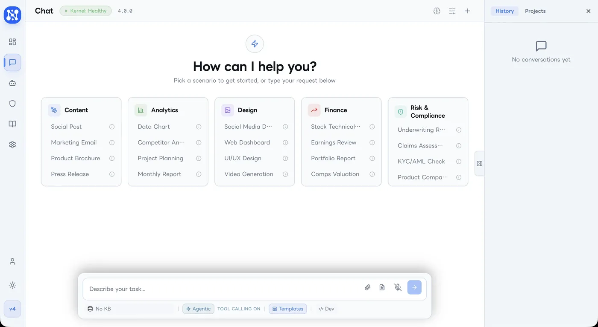
WHY NEXUS OS
你也遇過這些問題嗎？
AI 工具太多，每個都要學
市面上有做簡報的 AI、寫文案的 AI、分析數據的 AI... 我光是切換工具就花掉半天。
AI 給的答案不敢直接用
AI 幫我寫的合約真的合法嗎？生成的報告數字有沒有錯？每次都還要花時間自己再查一遍。
公司資料丟給 AI 不放心
客戶資料、財務報告... 傳到雲端 AI 感覺不安全，但不用 AI 又跟不上效率。
CORE FEATURES
一個平台，搞定所有 AI 工作流程
智慧對話
用自然語言下指令，AI 自動判斷該用哪個工具完成任務
法律助理 Themis
涵蓋 11 部台灣法規，合約審查、存證信函、法條查詢一次到位
財務分析
股票研究、財報分析、估值比較，用說的就能產出專業報告
文件工場
Word、PDF、Excel、簡報 — 從草稿到定稿，AI 幫你完成排版與內容
知識庫搜尋
上傳公司內部文件，AI 幫你從中找答案，不用再翻海量資料
安全治理
每個 AI 操作都有風險評估和審批機制，高敏感動作需要你點頭才執行
資料不出境
支援本機部署的 AI 模型，敏感資料不送雲端，合規又安心
多模型切換
支援 8 家 AI 供應商，依任務複雜度自動選擇最適合的模型
PLATFORM PREVIEW
平台實機畫面
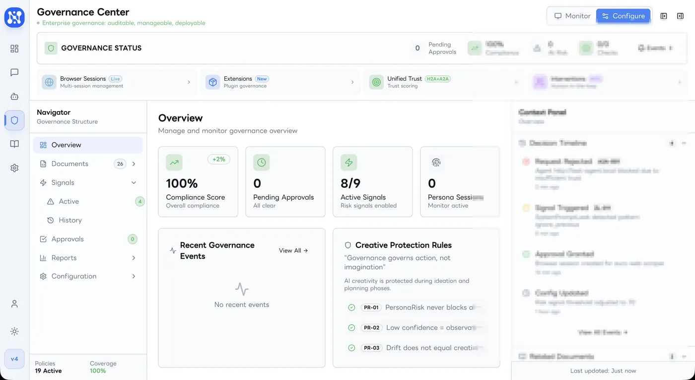
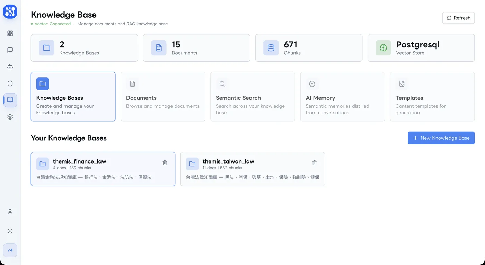
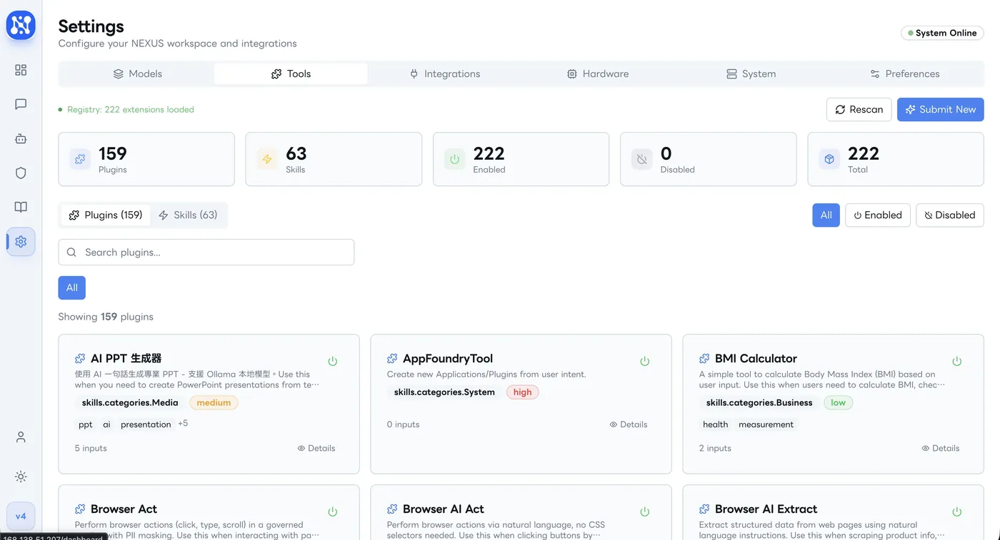
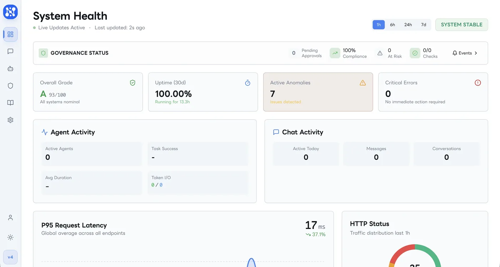
BY THE NUMBERS
NEXUS OS 核心數據
FAQ
常見問題
跟 ChatGPT 有什麼不同？
ChatGPT 是一個聊天機器人；NEXUS OS 是一個工作自動化平台。除了對話，NEXUS 能幫你生成文件、查詢法規、分析財報、管理知識庫，而且每個動作都有安全把關。你可以把它想成「有 200 個技能的智慧員工」，而不只是一個會聊天的 AI。
系統有 200 多個工具，AI 選得對嗎？
NEXUS OS 採用「兩階段篩選」機制。第一階段在毫秒內用關鍵字比對快速縮小範圍；第二階段由 AI 語意理解精準挑選。
更重要的是，系統支援「場景配置」功能 — 例如部署在金融保險場景時，只載入財務、法律、保險相關的工具，其他無關工具完全不進入候選名單。200 個工具不代表每次都從 200 個裡挑，而是根據您的業務場景，可能只從 30 個裡挑，大幅提升準確度。
同時，每次工具調用都會經過治理引擎評估風險等級，高風險操作會要求人工確認後才執行。
AI 回答的品質穩定嗎？會不會有時好有時差？
AI 的回答品質主要取決於背後使用的語言模型等級。NEXUS OS 內建「智慧模型路由」— 不是所有問題都用同一個模型回答。簡單問題（如查詢門診時間）用輕量快速的模型；複雜問題（如財務分析、法律諮詢）自動升級到更強的模型。
系統同時串接 8 家 AI 供應商，當某家服務異常時，自動切換到備援供應商，確保服務不中斷。
我們也坦白說：AI 目前不是 100% 完美。對於涉及多個步驟的複雜任務（例如需要查資料、分析、再產生文件），每一步都有可能出錯。NEXUS OS 的做法是在每個步驟加入檢查點，發現異常時及時中止並提示用戶，而非讓錯誤一路傳遞下去。
我的資料安全嗎？AI 會不會看到我的個資？
NEXUS OS 提供三層資料保護：
第一層 — 自動偵測攔截：系統內建敏感資料偵測器，自動識別身分證字號、信用卡號、手機號碼等個資。一旦偵測到，該請求會被攔截，不會送往雲端 AI 處理。
第二層 — 地端部署選項：您可以選擇將整套系統部署在自己的機房，所有資料和 AI 運算完全在您的控制之下，不經過任何外部網路。
第三層 — 完整審計軌跡：每一次 AI 操作（查了什麼資料、呼叫了什麼工具、產生了什麼結果）都會記錄在審計日誌中，可供內部稽核或法規查核使用。對於金管會或醫療法規有特殊要求的客戶，我們提供合規部署方案，確保資料主權完全在甲方手中。
我不懂技術，也能用嗎？
完全可以。NEXUS OS 就像跟助理對話一樣 — 你說「幫我分析這份合約有沒有問題」，AI 就會自動找到合適的工具幫你完成。不需要寫程式、不需要學新軟體。
讓每一個客戶
都感覺你只為他服務
AURA CDP 將您企業散落各處的客戶資料，整合成一個完整的人，幫助您的行銷團隊在對的時間，用對的方式，觸動對的人。
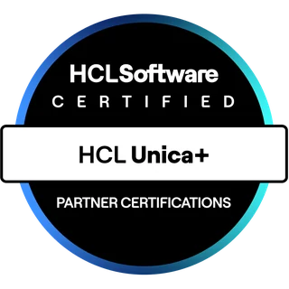
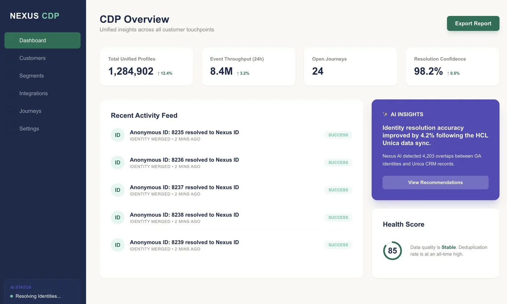
CHALLENGES
行銷團隊的共同難題
有很多資料，但不知道怎麼用
客戶資料分散在 CRM、電商平台、門市系統、APP，每個系統各說各話，行銷活動只能憑感覺。
個資外洩的新聞讓我們很擔心
客戶資料是公司最敏感的資產，一旦外洩，賠上的不只是罰款，而是多年建立的客戶信任。
競品活動一出，我們只能被動跟進
沒有即時的客戶洞察，行銷活動永遠慢半拍，無法在客戶最需要的時刻出現。
CORE FEATURES
完整的客戶數據解決方案
客戶 360° 視圖
把所有管道的客戶互動整合成一張完整的臉，讓您的團隊真正認識每一位客戶
智慧分眾引擎
用拖拉點選就能建立精準受眾，不需要工程師，行銷人員自己就能做到
即時行為追蹤
客戶剛瀏覽了什麼、剛買了什麼，幾秒內就能觸發個人化訊息
AI 流失預警
自動找出即將流失的高價值客戶，讓您在還來得及的時候挽回
全通路行銷自動化
Email、簡訊、推播通知一站管理，設定一次自動跑，省去重複手動作業
可地端部署
客戶資料永遠留在您自己的機房，不經過任何第三方雲端，符合金管會要求
同意管理中心
自動記錄每位客戶的個資授權狀態，輕鬆符合台灣個資法 2025 修正要求
白標品牌化
整個平台可掛上您的品牌識別，呈現給客戶的是您的品牌，不是軟體供應商
AI 搜尋能見度分析
追蹤品牌在 ChatGPT、Perplexity、Gemini 等 AI 搜尋引擎的被引用率與曝光排名
結構化知識圖譜
自動建立品牌知識實體與語意關聯，讓 AI 引擎正確識別並引用您的品牌資訊
語義內容優化
分析 AI 偏好的內容格式與結構，協助優化問答文件、產品說明，提升 AI 引用機率
競品 AI 能見度對標
比較您的品牌與競品在各大 AI 平台的曝光差距，找出搶佔 AI 心佔率的機會點
AI 引用來源追蹤
即時監控哪些頁面與內容被 AI 引擎選為回答來源，掌握高價值內容的曝光狀況
品牌聲音一致性
確保 AI 引擎描述您的品牌時使用正確、一致的語言與定位，避免錯誤詮釋損害形象
AI 友善 FAQ 生成
根據客戶常見提問，自動生成符合 AI 引擎偏好的結構化問答，大幅提升被引用機率
跨平台佈局策略
針對不同 AI 平台的訓練偏好與資料來源，制定差異化的內容佈局與發布策略
PLATFORM PREVIEW
平台實機畫面
- CDP Overview 統一客戶洞察儀表板，即時掌握 1,284,902 組整合資料與身份解析進度
- 客戶 360° 視圖 完整客戶檔案與 RFM 分層，Champion、At Risk 一目瞭然
- 智慧分眾引擎 拖拉建立精準受眾，High LTV Champions、At-Risk Winback 即時動態更新
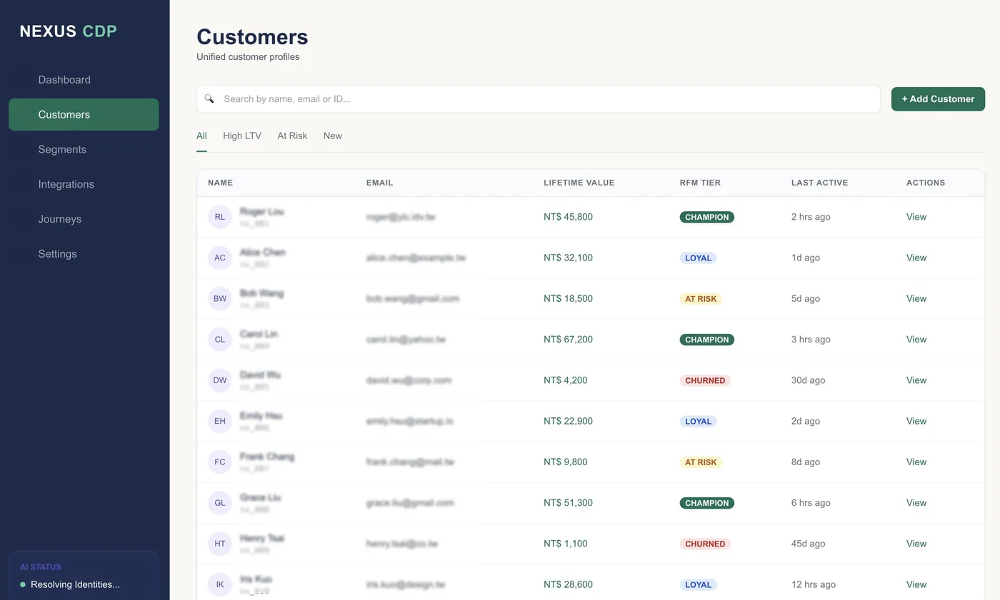
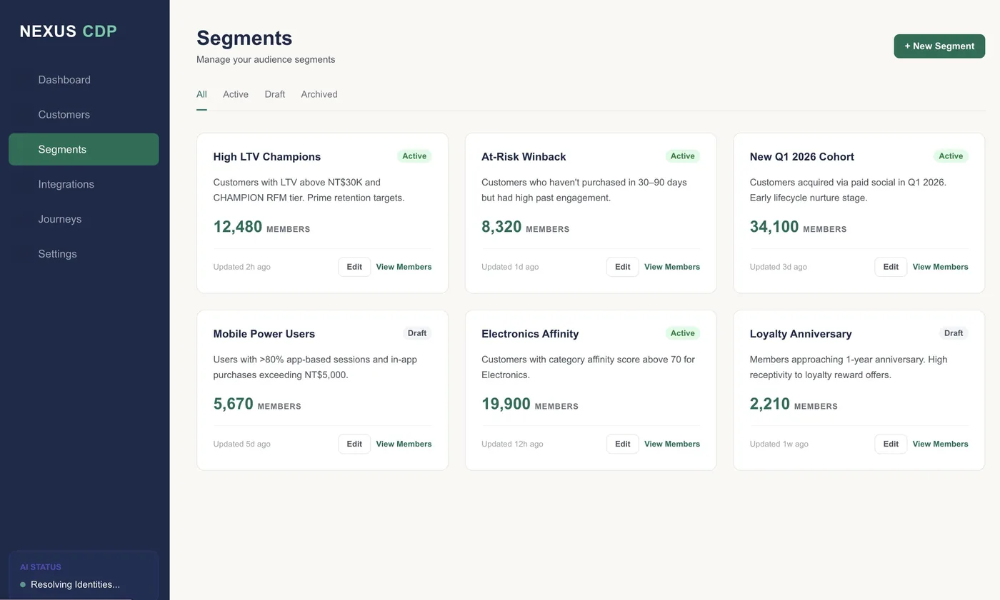
KEY ADVANTAGES
為什麼選擇 AURA CDP
FAQ
常見問題
我們公司沒有大型 IT 團隊，可以導入 AURA CDP 嗎？
可以。AURA CDP 的行銷操作介面專為非技術背景設計，分眾、活動排程、報表查看都能透過視覺化拖拉完成，不需要寫程式碼。導入期間我們的顧問團隊會全程陪跑。
客戶資料放在 AURA CDP 裡安全嗎？
您的資料永遠只存在您自己的伺服器或私有雲，我們的平台不接觸、不儲存任何一筆您的客戶資料。所有機密金鑰採軍規等級的記憶體保護，技術人員在沒有您授權的情況下無法存取任何資料。
和 Salesforce、Adobe 這類國際大廠比，AURA CDP 有什麼優勢？
三個關鍵差異：第一，資料完全留在台灣境內，符合金管會要求，國際大廠無法做到；第二，5 年總擁有成本比 Salesforce 低 100 至 700 萬美元；第三，AURA CDP 提供完整中文介面與本地顧問服務，您不需要等海外支援時差。
讓文字開口說話
讓品牌聲音活起來
AI Voice Studio 是一套企業級 AI 語音平台，從語音合成、聲音複製到會說話的虛擬角色，一站完成。不需要錄音棚，不需要配音員，只需要輸入文字。
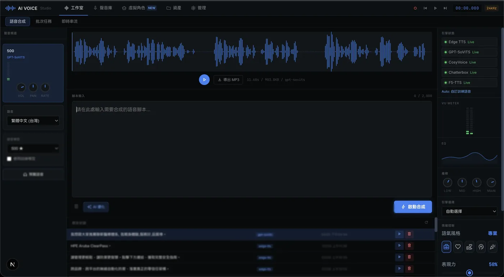
CHALLENGES
語音內容的三大痛點
找配音員又貴又慢
每次需要語音內容，就要等配音員排程、來回修改、支付高額費用。急件更是不可能。
錄出來的聲音聽起來像機器人
免費 TTS 工具語調生硬、發音奇怪，用在正式場合只會讓品牌形象扣分。
大量個人化通知根本來不及處理
幾百筆客戶通知、保單提醒、活動邀請，一則一則錄根本不可能，外包又超出預算。
CORE FEATURES
從文字到聲音，一站搞定
AI 語音合成
輸入任何文字，秒速生成媲美真人的自然語音，支援中、英、日等多語言
聲音複製
只需上傳 10 秒錄音，AI 立刻複製出一模一樣的聲音，不需要龐大的訓練資料
專屬聲音訓練
用自己的錄音訓練出獨一無二的品牌聲音，永久擁有，任意調用
情緒語音控制
自由調整親切、關懷、熱情等情緒語調，讓語音內容更有溫度、更有說服力
虛擬角色 Avatar
上傳一張照片，輸入台詞，AI 自動生成會說話、會動嘴的虛擬代言人影片
批次語音生成
上傳客戶名單，一鍵生成數百則個人化語音，每位客戶聽到的都不一樣
素材庫管理
所有生成的音訊與影片集中管理，隨時下載、重複使用
PLATFORM PREVIEW
平台實機畫面
- 品牌語音庫 管理系統與企業專屬聲音模型，多語系一站整合
- 虛擬角色 Avatar 上傳一張照片即可建立會說話的品牌代言人
- 資產歷程管理 完整記錄每筆語音生成的參數與內容，隨時調用重製
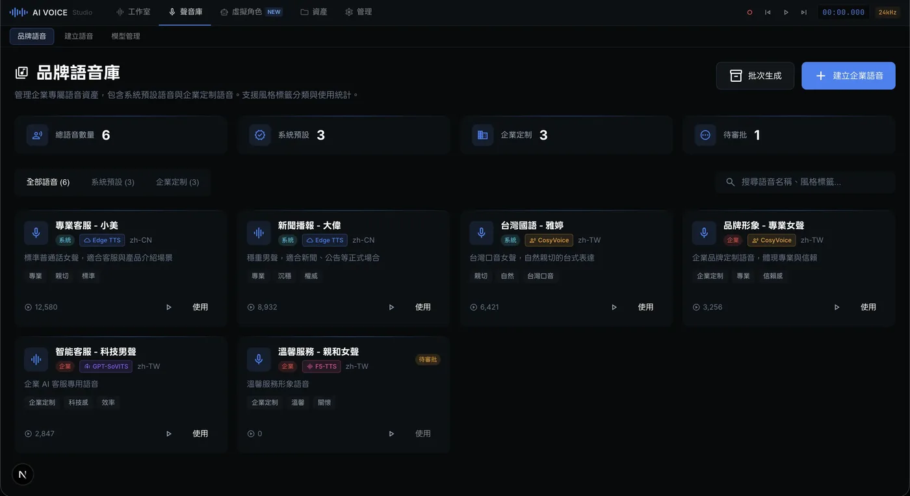
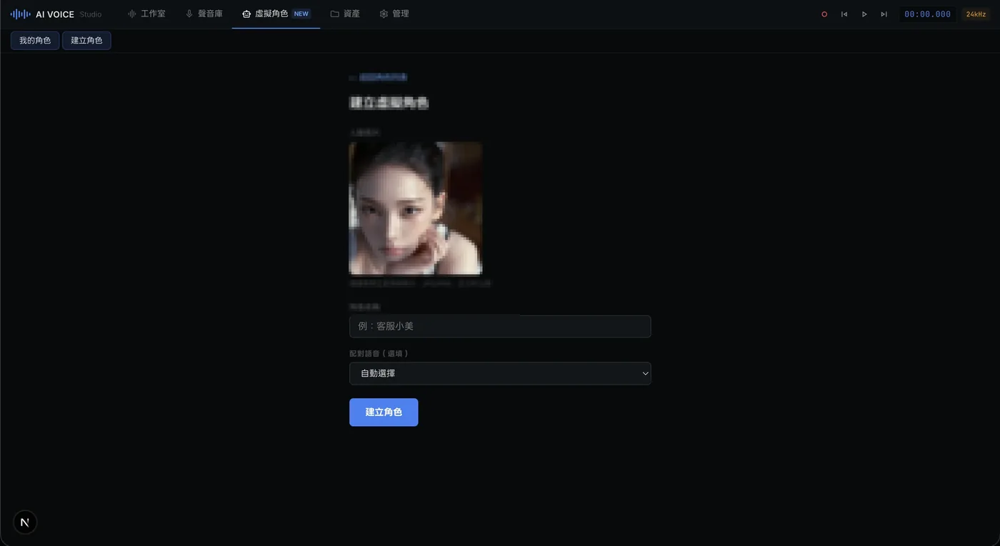
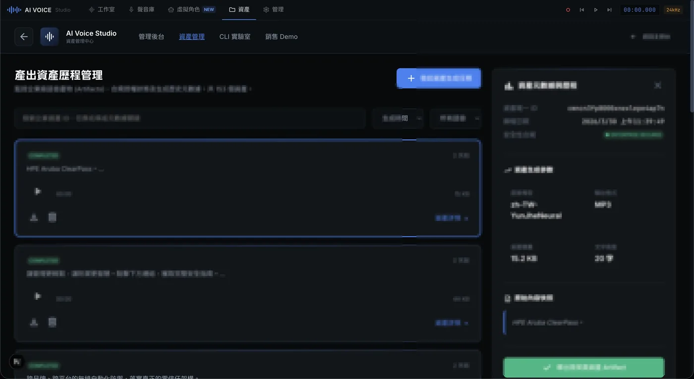
BY THE NUMBERS
AI Voice Studio 核心數據
FAQ
常見問題
我完全沒有技術背景，也能用嗎？
可以。AI Voice Studio 介面設計直觀，像是一個專業錄音工作室，但操作邏輯就跟文字輸入框一樣簡單。選好語音、打字、點生成，就這樣。
生成的語音聽起來夠自然嗎？和真人有差距嗎？
我們整合了業界頂尖的多個 AI 語音引擎，系統會根據你的需求自動選用最適合的那一個。中文語音尤其針對台灣腔調優化，聽起來自然、親切，不會有機器感。
我的聲音資料和客戶資料安全嗎？
採用企業級多租戶架構，每個帳號的聲音模型、生成內容、客戶資料完全獨立，不同帳號之間無法互相存取。訓練好的專屬聲音模型只屬於你。
把治理動作
變成可查驗的紀錄
金融機構的非結構化資料治理層。分級、保存期限、法律保全、四眼簽核與 AI 使用溯源由伺服器強制執行；每一次治理動作寫進 append-only 稽核鏈——竄改可被偵測。

CORE FEATURES
治理不是寫一本手冊，是讓每個動作都留得下證據
稽核鏈（WORM）
雜湊鏈稽核軌跡，資料庫層以 append-only 觸發器擋掉 UPDATE／DELETE；驗證逐筆重算，斷鏈時指出斷在第幾筆
生命週期與保存
分媒體保存期限（依機構政策設定）、法律保全、處分證書。保存期限未到不得處分，這是伺服器強制，不是畫面上的提示
資料共享治理
再識別風險分級、同意管理、當事人權利、中國牆利益衝突隔離；低品質資料分享不出去
AI 治理與溯源
一次 AI 決策引用了哪些來源、當下密級為何；未通過公平性評估的模型在高風險用途上被擋下